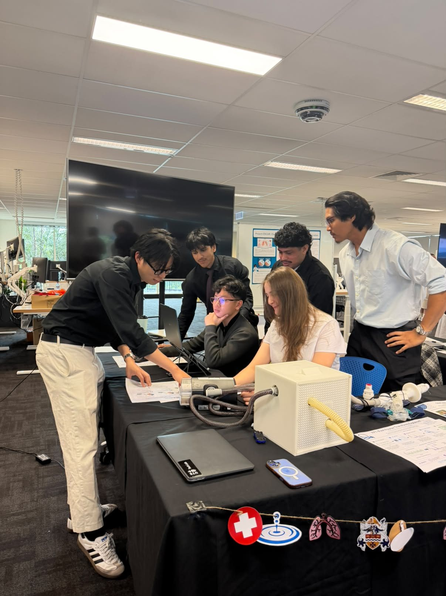
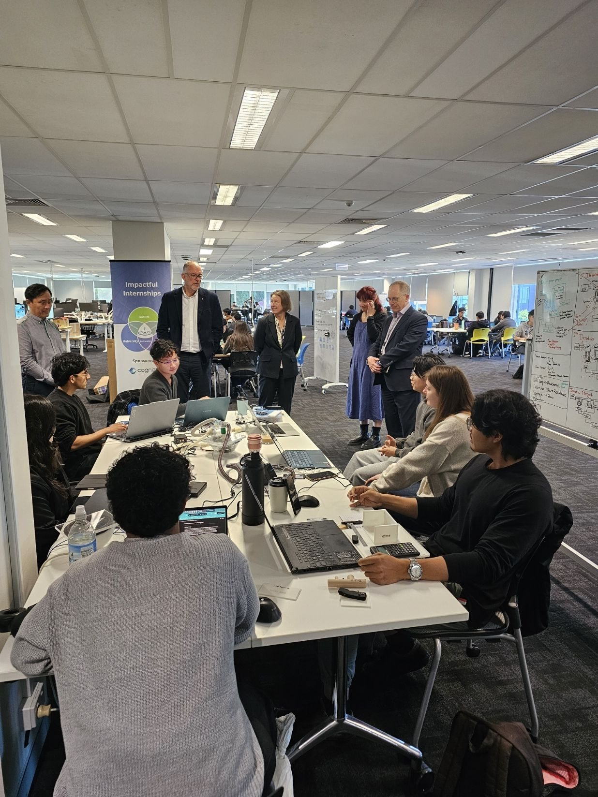
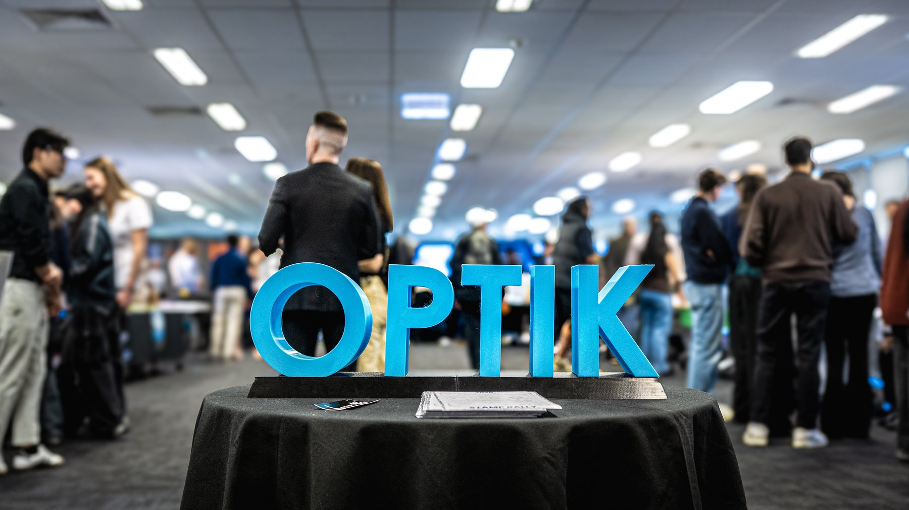

The hardware was not the hard part.
An execution job: take a brief, propose a device, build it. I assumed the electronics would be the hard part.
The problem was not defined yet. We had to go back to the clinicians to learn what they needed and why their existing commercial device fell short. Two earlier student groups had tried and failed for basic electrical reasons, so solid electrical engineering was the bottleneck.
A passing test does not always prove what you think it proves. My calibration correction passed the daily check for weeks while giving wrong readings on patients, because the check only tested the two points where it was right by construction. I now ask what a test actually validates. I also told the hospital directly that the patient measurement was not accurate enough yet, which was more useful to them than a polished demo.
I can take a partly defined problem to working hardware and firmware, then validate it properly. The evidence is the device, its validation data, and a handover report setting out what works and what does not, which the supervising clinician singled out as valuable.